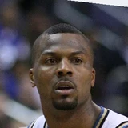

DeShawn Stevenson on his high-school-to-NBA transition:
“Mine was tough. I feel like I had to grind harder. I didn’t get the same chances as most straight-out-of-high-school guys. I went to a team that had been to the Finals two years in a row and was trying to compete for a championship and they had John Stockton, Karl Malone, Byron Russell and John Starks. We had seasoned vets, so I didn’t play that much. Also, I had a coach who was hard-nosed in Jerry Sloan; he didn’t play any games. I came out of high school and was flashy, so it was an adjustment. I kind of got stereotyped… It was tough, man. Sometimes I would get picked on really bad...”

DeShawn Stevenson on Jerry Sloan, Karl Malone, John Stockton, John StarksaudioBoom